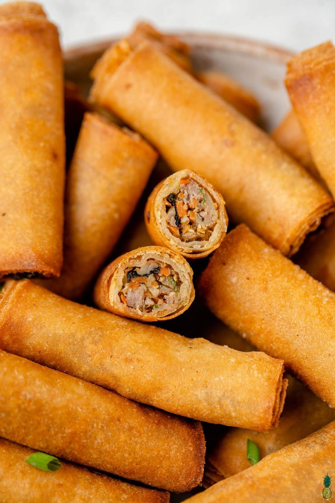
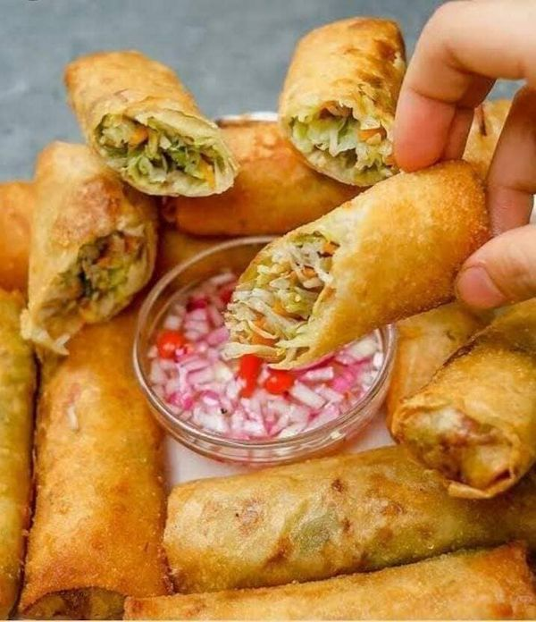
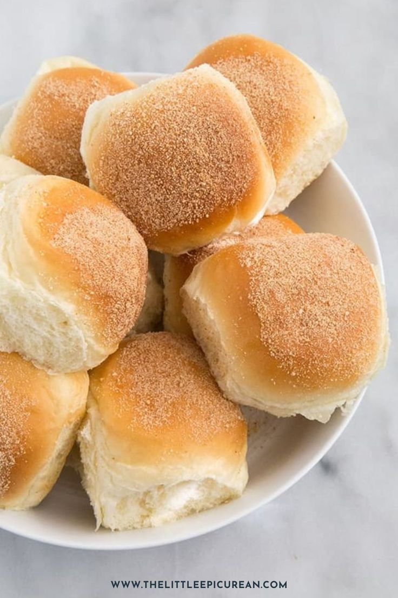

WELCOME TO THE RECIPE'S WEBSITE
What is this website about?
This website features the top three popular Filipino snack recipes: Lumpiang Shanghai, Lumpiang Gulay, and Pandesal. It is designed to help users learn how to prepare these classic snacks through easy-to-follow recipes, ingredient lists, and step-by-step cooking instructions. The website also provides information about the history and cultural significance of each dish, allowing visitors to appreciate the rich culinary traditions of the Philippines. With a simple and user-friendly design, the website is ideal for students, home cooks, and anyone interested in exploring authentic Filipino snacks and bringing the flavors of the Philippines into their own kitchen.
THE TOP 3 FAMOUS FILIPINO SNACKS

Lumpiang Shanghai is one of the most popular Filipino dishes, often served during birthdays, fiestas, holidays, and family gatherings. It is made by wrapping a flavorful mixture of ground pork, finely chopped vegetables such as carrots and onions, and seasonings in a thin lumpia wrapper before being deep-fried until golden brown and crispy. It is usually served with sweet chili sauce, banana ketchup, or vinegar for added flavor. Loved by both children and adults, Lumpiang Shanghai is valued for its crunchy texture, savory filling, and delicious taste. More than just a dish, it represents Filipino hospitality and the joy of sharing good food with family and friends during special occasions.

Lumpiang Gulay is a traditional Filipino dish made from a mixture of ground meat or seafood, vegetables, and seasonings wrapped in a thin lumpia wrapper and deep-fried until golden brown and crispy. It is commonly served during special occasions and family gatherings, offering a delightful combination of textures and flavors that showcase the rich culinary heritage of the Philippines.

Pandesal is a popular Filipino bread roll that is soft, fluffy, and slightly sweet. It is typically enjoyed for breakfast or as a snack, often paired with coffee, hot chocolate, or savory fillings such as cheese, butter, or jam. Pandesal is a staple in Filipino households and bakeries, known for its comforting taste and versatility in various culinary applications.